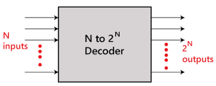

THEORY
STUCK AT FAULT: After manufacturing a chip, the number of
physical defects in a chip can be too many i.e., may be infinitely
large. So many times, this is impossible to count and analyse all
possible faults. So, while testing a circuit/IC we abstract physical
defects and define some logical fault models.
In this way
- It reduces the number of faults to be considered.
- Makes test generation and fault simulation possible.
-
We can quantitatively compare test-sets to minimize the faults as
minimum as possible.
Note: Defining fault models doesn’t mean circuit has these faults. We
only assume that circuit is behaving like that.
There are different
levels of abstraction of fault modelling:
Behavioural, Functional,
Structural, Switch level, Geometrical
Among these, the stuck at fault
model comes under structural level fault model and there are 2 types
of stuck at fault modelling:
Single stuck at fault modelling, Multiple
stuck at fault modelling.
Among these two, single stuck at fault
modelling is most popular. why?
-
Due to simplicity of single stuck at model it has been widely used
to taste ICs.
-
Some interesting results that A test set that detect all single
stuck at fault detect about >95% of multiple stuck at fault.
-
For tree like circuit, it detects all multiple stuck at faults.
DECODER
Decoder is a combinational logic circuit that converts the binary information from n coded inputs to a maximum of 2^n unique outputs.

Sometimes an additional input is given as “Enable” to activate the circuit, it activates when enable input is at logic level “1” and deactivates when it is at logic level “0”. Basically it decodes the coded binary inputs to corresponding output. As n bits can represent 2^n numbers similarly here n inputs represent a single output as “1” and other outputs as “0”.
4x16 decoder using 3x18 decoders:
The parallel inputs A0, A1 & A2are applied to each 3x8 decoder along with an enable input A3, which accordingly activates the two decoders as it becomes ‘0’ and ‘1’ respectively. The outputs D0 to D7 (the first eight minterms) are corresponding to enable at ‘0’ and outputs D8 to D15 (the first eight maxterms) are corresponding to enable at ‘1’.